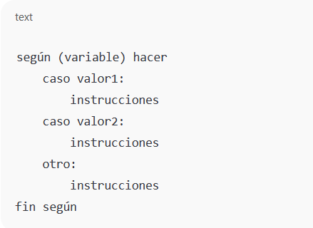

Comprender qué son las sentencias de control en programación y cómo se utilizan para dirigir el flujo de ejecución de un programa mediante decisiones y repeticiones.
.Identificar el concepto de sentencias de control en programación. .Reconocer los diferentes tipos de sentencias de control. .Analizar la función de las sentencias condicionales y repetitivas. .Describir la sintaxis básica de cada tipo de sentencia de control. .Aplicar correctamente las sentencias de control en ejemplos sencillos.
Las sentencias de control son estructuras utilizadas en programación para controlar el orden en que se ejecutan las instrucciones dentro de un programa. Gracias a ellas, un programa puede tomar decisiones, repetir acciones o seleccionar diferentes caminos de ejecución dependiendo de una condición.
Sin las sentencias de control, los programas se ejecutarían de forma secuencial, sin capacidad de responder a distintas situaciones.
Permiten ejecutar instrucciones solo si se cumple una condición.
Se utiliza cuando hay varias opciones posibles.
Permiten repetir un bloque de instrucciones.
Las sentencias de control son fundamentales en la programación, ya que permiten dirigir el flujo de ejecución de un programa de manera lógica y organizada. Gracias a ellas, un programa puede tomar decisiones, repetir procesos y seleccionar diferentes caminos según las condiciones que se presenten.
Comprender qué son las funciones en programación y su importancia para organizar, reutilizar y estructurar correctamente el código en el desarrollo de programas.
.Definir el concepto de funciones en programación. .Identificar los diferentes tipos de funciones. .Reconocer el uso de parámetros y valores de retorno en las funciones. .Analizar ejemplos básicos de funciones en distintos casos. .Valorar la importancia de las funciones para mejorar la claridad y eficiencia del código.
Las funciones en programación son bloques de código diseñados para realizar una tarea específica dentro de un programa. Permiten dividir un programa grande en partes más pequeñas, facilitando su comprensión y mantenimiento. Una función puede recibir datos de entrada llamados parámetros y puede devolver un resultado mediante un valor de retorno.
.Evitan repetir código .Mejoran la organización del programa .Facilitan la lectura y corrección de errores .Permiten reutilizar soluciones
Las funciones son esenciales en la programación, ya que permiten estructurar los programas de forma ordenada y eficiente. Comprender sus tipos y usos facilita el desarrollo de aplicaciones más claras, reutilizables y fáciles de mantener.
Comprender los fundamentos de la Programación Orientada a Objetos, identificando los cuatro pilares principales y el concepto de clases y objetos para su correcta aplicación en el desarrollo de programas.
Definir qué es la Programación Orientada a Objetos. Explicar el concepto de clases y objetos. Identificar y describir los cuatro pilares de la POO: encapsulamiento, herencia, polimorfismo y abstracción. Analizar la función de cada pilar dentro de la programación orientada a objetos. Valorar la importancia de la POO para crear programas organizados y reutilizables.
La Programación Orientada a Objetos es un paradigma de programación que organiza el código en objetos que representan entidades del mundo real, combinando datos y comportamientos en una misma estructura.
Una clase es una plantilla que define las características (atributos) y comportamientos (métodos) que tendrán los objetos.
Un objeto es una instancia de una clase, es decir, un elemento creado a partir de una clase con valores propios.
Consiste en proteger los datos de un objeto y permitir el acceso a ellos únicamente mediante métodos controlados.
Permite que una clase herede atributos y métodos de otra, favoreciendo la reutilización del código.
Permite que un mismo método tenga distintos comportamientos según el objeto que lo utilice.
Se enfoca en mostrar solo los aspectos esenciales de un objeto, ocultando los detalles internos de su funcionamiento.
La Programación Orientada a Objetos, mediante sus cuatro pilares y el uso de clases y objetos, facilita el desarrollo de software estructurado, flexible y fácil de mantener. Su comprensión es fundamental para la formación en programación.
Una expresión en programación es una combinación de valores, variables y operadores que se evalúa para obtener un resultado.
+, -, *, /
>, <, ==, !=
AND, OR, NOT
Ejemplo:
función sumar(a, b)
retornar a + b